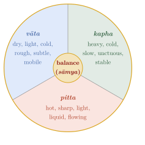
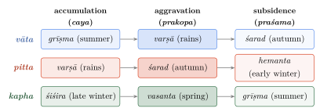
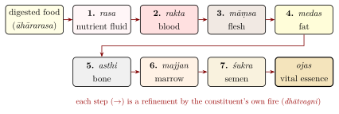

Chapter 2: Foundational Principles¶
puruṣo ’yaṃ lokasaṃmitaḥ … yāvanto hi loke mūrtimanto bhāvaviśeṣās tāvantaḥ puruṣe, yāvantaḥ puruṣe tāvanto loke
This person is equal to the world … As many particular embodied entities as there are in the world, so many are there in the person; as many as are in the person, so many are in the world.
— Caraka Saṃhitā, Śārīrasthāna 5.3
2.1 The Theoretical Framework¶
The theory of the body in the classical compendia rests on a small number of ideas that recur on almost every page. The body and everything that enters it—food, drink, drugs, air, heat and cold—are made of the same five elements. Three “doṣas”, vāta, pitta and kapha, govern the body’s processes and are the usual agents of disease. Seven bodily constituents (dhātu) are built up in succession from the essence of digested food by the action of internal “fires” (agni), leaving waste products (mala) to be expelled. All of these move through channels (srotas). Health is the balance of these factors, disease their imbalance, and therapy the restoration of balance by means of substances and actions with the opposite qualities.
The framework is a humoral theory, broadly comparable to the Greek humoral medicine of Hippocrates and Galen, though the two developed independently and differ in their details. It provided Indian physicians with a powerful, flexible way of organising observation and of reasoning about treatment. It is not, however, a description of the body in terms that modern physiology recognises: vāta, pitta and kapha are not nerves, enzymes or mucus, though each word has a material sense. Attempts to translate them directly into modern anatomical or biochemical terms usually distort both systems. This chapter describes the theory as the texts present it.
2.1.1 A Comparison with Greek Humoral Medicine¶
The comparison with Greek medicine is instructive. The Hippocratic treatise On the Nature of Man (late fifth century BCE) and, later, Galen (second century CE) taught that the body contains four humours—blood, phlegm, yellow bile and black bile—whose balance is health and whose imbalance is disease, and that each humour has a characteristic pair of the four qualities hot, cold, wet and dry. Treatment aimed to restore balance by diet, regimen, drugs with opposite qualities, and the evacuation of excess humours by purging, vomiting and bloodletting. The parallels with the Indian system are obvious. The differences are equally important. The Indian system counts three doṣas, not four; it treats blood as a bodily constituent rather than a humour, although Suśruta sometimes counts blood as a fourth agent of disease alongside the doṣas; it analyses substances by taste, potency and post-digestive taste, which have no exact Greek equivalents; and it works with five elements, not four. Whether the two systems influenced each other at an early stage is unknown (Chapter 5). Greek humoral medicine reached India much later, as Unani (Chapter 11).
Comparison with Chinese medicine is also instructive. Classical Chinese medicine, codified in works such as the Inner Classic of the Yellow Emperor (Huangdi neijing, compiled in the last centuries BCE), explained the body in terms of the complementary forces of yin and yang, five “phases” (wood, fire, earth, metal and water), and the circulation of qi through a system of channels. Like the Indian and Greek systems, it was a theory of balance in which disease arose from excess or deficiency and therapy restored equilibrium; like them, it related the body to the seasons and the cosmos. The three traditions developed largely independently, though Indian ideas reached China with Buddhism (Chapter 5). Their similarity reflects common features of pre-modern attempts to explain health and disease in terms of a few observable qualities, rather than a shared origin.
2.1.2 The Causes of Disease¶
Caraka names three general causes of disease (Ca.Sū. 11.43): the wrong contact of the senses with their objects (asātmyendriyārthasaṃyoga), such as looking at too bright a light or hearing too loud a sound; “offences against wisdom” (prajñāparādha), that is, acting against one’s own better judgement in body, speech or mind; and the effects of time and season (pariṇāma). Each may act by excess (atiyoga), deficiency (hīnayoga) or wrong use (mithyāyoga). The doctrine places a large share of the responsibility for disease on the patient’s own conduct, and it explains why regimen and self-restraint have such prominence in the compendia.
2.2 The Five Great Elements (Pañcamahābhūta)¶
All material things, according to the compendia, are composed of five great elements: space (ākāśa), wind or air (vāyu), fire (tejas or agni), water (ap or jala) and earth (pṛthivī). Each element is associated with one sense object and its sense faculty, an idea shared with the Sāṃkhya and Vaiśeṣika schools (Table 2.1).
| Element | Sanskrit | Sense object | Sense organ | Characteristic qualities |
|---|---|---|---|---|
| Space | ākāśa | sound (śabda) | ear | lightness, subtlety, softness, pervasiveness |
| Air | vāyu | touch (sparśa) | skin | lightness, mobility, dryness, roughness, cold |
| Fire | tejas | form, colour (rūpa) | eye | heat, sharpness, lightness, dryness |
| Water | ap | taste (rasa) | tongue | cold, fluidity, softness, unctuousness, heaviness |
| Earth | pṛthivī | smell (gandha) | nose | heaviness, hardness, stability, roughness |
In the body, the earth element is evident in solid structures, water in fluids, fire in heat, digestion and vision, air in movement and breath, and space in cavities and channels. The same analysis applies to foods and drugs: a substance’s taste, qualities and effect are explained by the elements that predominate in it (Chapter 6).
2.3 The Six Categories and the Rule of Similarity¶
Caraka adopts the six categories (padārtha) of the Vaiśeṣika school: generality (sāmānya), particularity (viśeṣa), quality (guṇa), substance (dravya), action (karma) and inherence (samavāya) (Ca.Sū. 1.28). Substances are nine: the five elements, self, mind, time and direction. The qualities number forty-one: the twenty physical qualities arranged in ten opposed pairs (gurvādi, “heavy and the rest”), the five sense objects, six qualities of the self (understanding, desire, aversion, pleasure, pain and effort), and ten further qualities beginning with “priority” (parādi).
The use of these categories in medicine is governed by a single rule:
Caraka Saṃhitā, Sūtrasthāna 1.44
sarvadā sarvabhāvānāṃ sāmānyaṃ vṛddhikāraṇam
hrāsahetur viśeṣaś ca pravṛttir ubhayasya tu
At all times, similarity is the cause of increase of all things, and dissimilarity the cause of decrease—provided that both are brought into play.
A quality in the body is increased by substances or actions that share it and decreased by those that have the opposite quality. A depleted constituent is built up by what resembles it (meat, Caraka says, increases flesh); an excess is reduced by its opposite (a hot, sharp pitta is reduced by what is cold and mild). Almost every therapeutic argument in the compendia can be read as an application of this rule.
| Quality | Opposite | Quality | Opposite |
|---|---|---|---|
| guru heavy | laghu light | ślakṣṇa smooth | khara rough |
| manda slow, dull | tīkṣṇa sharp | sāndra dense | drava liquid |
| hima / śīta cold | uṣṇa hot | mṛdu soft | kaṭhina hard |
| snigdha unctuous | rūkṣa dry | sthira stable | cala mobile |
| sūkṣma subtle | sthūla gross | viśada clear | picchila slimy |
2.4 The Three Doṣas¶
The word doṣa means “fault” or “defect”. The three doṣas are so called because, when disturbed, they spoil the body; in their normal state they sustain it. Vāgbhaṭa states the doctrine in a single verse:
Aṣṭāṅgahṛdaya, Sūtrasthāna 1.6–7
vāyuḥ pittaṃ kaphaś ceti trayo doṣāḥ samāsataḥ
vikṛtāvikṛtā dehaṃ ghnanti te vartayanti ca
In brief, the doṣas are three: wind, bile and phlegm. Disturbed, they destroy the body; undisturbed, they keep it going.
The three words have concrete meanings—wind, bile and phlegm—and the texts treat the doṣas as real substances or forces in the body, not as abstract “energies”. Vāgbhaṭa defines them by their qualities (AH Sū. 1.11–12): vāta is dry, light, cold, rough, subtle and mobile; pitta is slightly unctuous, sharp, hot, light, fleshy-smelling, flowing and liquid; kapha is unctuous, cold, heavy, slow, smooth, slimy and stable. Later writers analysed each doṣa into the elements that predominate in it—vāta in air and space, pitta in fire (with water), kapha in water and earth (Figure 2.1).

2.4.1 Functions and Seats¶
Vāta is responsible for all movement: breathing, the movement of the limbs, speech, the impulses of the senses, the propulsion of food and of waste. Its chief seat is the colon (pakvāśaya). Pitta is responsible for heat and transformation: digestion, body temperature, vision, complexion, intelligence and courage; Caraka names the stomach (āmāśaya) as its chief seat, Vāgbhaṭa the region of the navel. Kapha provides stability, cohesion and lubrication: firmness of the body, smoothness of the joints, strength and patience; its chief seat is the chest. Each doṣa has five subdivisions, named by their location and function (AH Sū. 12; Table 2.3).
| Subdivision | Seat | Function |
|---|---|---|
| Vāta | ||
| prāṇa | head, chest | inhalation, swallowing, sneezing; sustains mind and senses |
| udāna | chest, throat | speech, effort, strength, memory |
| samāna | near the digestive fire | digestion; separation of nutrient from waste |
| vyāna | whole body | movement of the limbs; circulation; sweating |
| apāna | pelvis, colon | expulsion of faeces, urine, semen, menstrual blood and the foetus |
| Pitta | ||
| pācaka | between stomach and colon | digestion |
| rañjaka | stomach (Suśruta: liver and spleen) | gives colour to the nutrient fluid (rasa) |
| sādhaka | heart | intellect, ambition, the attainment of one’s aims |
| ālocaka | eye | vision |
| bhrājaka | skin | complexion |
| Kapha | ||
| avalambaka | chest | supports the heart and the other seats of kapha |
| kledaka | stomach | moistens food |
| bodhaka | tongue | perception of taste |
| tarpaka | head | nourishes the senses |
| śleṣaka | joints | lubricates the joints |
Vāta is often called the most important of the three because it moves the others. A much-quoted verse of the later Śārṅgadhara Saṃhitā puts it vividly: pitta, kapha, the bodily constituents and the waste products are “lame”, and go wherever the wind carries them, like clouds. Table 2.4 summarises the three doṣas.
| Vāta | Pitta | Kapha | |
|---|---|---|---|
| Literal sense | wind | bile | phlegm |
| Predominant elements (later texts) | air, space | fire (with water) | water, earth |
| Qualities | dry, light, cold, rough, subtle, mobile | slightly unctuous, sharp, hot, light, liquid, flowing | unctuous, cold, heavy, slow, smooth, stable |
| Chief seat | colon | stomach (Caraka); navel region (Vāgbhaṭa) | chest |
| Main functions | movement, breathing, speech, impulses of the senses, elimination | digestion, heat, vision, complexion, intellect | stability, lubrication, strength, patience |
| Predominant in | old age; end of day, night and digestion | middle age; middle of day, night and digestion | childhood; beginning of day, night and digestion |
| Aggravated in | the rains | autumn | spring |
| Principal purification | enema | purgation | emesis |
| Tastes that reduce it | sweet, sour, salt | sweet, bitter, astringent | pungent, bitter, astringent |
2.4.2 Increase and Decrease¶
Disease arises when a doṣa, a dhātu or a mala increases (vṛddhi) or decreases (kṣaya) beyond its normal measure. The compendia list the signs of each; Table 2.5 gives a summary after Vāgbhaṭa (AH Sū. 11).
| Doṣa | Increase | Decrease |
|---|---|---|
| Vāta | emaciation, dark complexion, desire for warmth, tremor, distension, constipation, insomnia, loss of strength, incoherent speech | lassitude, little speech, confusion, and the signs of increased kapha |
| Pitta | yellow colour of stools, urine, eyes and skin; hunger, thirst, burning, little sleep | weak digestive fire, cold, loss of lustre |
| Kapha | weak digestion, salivation, lassitude, heaviness, pallor, cold, looseness of the limbs, dyspnoea, cough, excessive sleep | dizziness, emptiness of the seats of kapha, palpitation, looseness of the joints |
2.4.3 What Disturbs the Doṣas¶
The texts list the causes that aggravate each doṣa. Vāta is aggravated by dry, light, cold and astringent, bitter or pungent food, by fasting, excessive exercise, staying awake at night, suppressing natural urges, fear, grief and worry, by the end of the day and of digestion, and by the rainy season. Pitta is aggravated by pungent, sour, salty, hot and sharp food, alcohol, anger, exposure to the sun and fire, midday and the middle of digestion, and autumn. Kapha is aggravated by sweet, sour, salty, heavy, cold and unctuous food, overeating, sleeping by day, lack of exercise, the morning and the beginning of digestion, and spring. The same lists, reversed, give the general direction of treatment: a disorder of vāta is treated with unctuous, warm and heavy measures; one of pitta with cool, sweet and bitter ones; one of kapha with light, dry, pungent ones and with exercise and fasting. The reasoning is simple and flexible, which helps to explain its enduring appeal; its weakness is that the same flexibility makes it difficult to test.
2.4.4 The Doṣas and the Seasons¶
The doṣas accumulate, become aggravated and subside in a yearly cycle. Vāgbhaṭa summarises it: vāta accumulates, is aggravated and subsides in the three seasons beginning with summer; pitta in the three beginning with the rains; kapha in the three beginning with late winter (AH Sū. 12.24). The physician is to anticipate these changes with an appropriate regimen (Figure 2.2).

2.5 Constitution (Prakṛti)¶
Every person, according to the compendia, has a natural constitution (prakṛti) in which one or more of the doṣas predominates. Caraka explains that the constitution of the embryo depends on the nature of the semen and uterine blood, the season and the condition of the womb, the mother’s diet and conduct, and the elements involved (Ca.Vi. 8.95). It is fixed at conception and lasts for life. The texts recognise seven types: the three in which a single doṣa predominates, three “dual” types, and a balanced constitution, which is considered best. Caraka also describes people of each type in some detail (Ca.Vi. 8.96–98).
| Feature | Vāta type | Pitta type | Kapha type |
|---|---|---|---|
| Body | thin, light, rough; prominent joints and veins | medium; warm, soft skin with moles and freckles | well-built, heavy, smooth, firm |
| Hair | dry, sparse | soft, early greying and baldness | thick, dark, glossy |
| Appetite and digestion | irregular | strong; cannot bear hunger and thirst | moderate; little hunger |
| Sleep | light | moderate | deep, long |
| Temperament | quick to act, restless, talkative, quickly frightened | sharp, brave, proud, quick to anger | calm, patient, steady, slow |
| Texts’ prognosis | “little strength, short life, few children” | “moderate” | “strong, wealthy, learned, vigorous, calm, long-lived” |
Modern textbooks of Āyurveda expand these classical descriptions into detailed questionnaires for assessing constitution. Table 2.7 gives a typical modern summary; it is included to show how the classical concept is used in contemporary practice, not as a validated method of classification.
| Feature | Vāta | Pitta | Kapha |
|---|---|---|---|
| Frame | thin, light, narrow | medium | large, broad |
| Weight | low; difficulty gaining | moderate | gains easily |
| Skin | dry, rough, cool | warm, soft, freckled | thick, smooth, cool |
| Appetite | variable | strong | steady, moderate |
| Digestion | irregular | quick | slow |
| Sleep | light, interrupted | moderate | deep, long |
| Speech | fast, talkative | sharp, precise | slow, measured |
| Memory | quick to learn and to forget | sharp | slow to learn, retentive |
| Temperament | lively, anxious | ambitious, irritable | calm, steady |
| Preferred climate | dislikes cold and wind | dislikes heat | dislikes cold and damp |
The few studies that have tested whether different practitioners assessing the same person reach the same conclusion have found agreement that varies widely and is often modest (Kurande et al. 2013).
The last row of Table 2.6 is worth noting: the classical descriptions are not neutral personality profiles but carry moral and social valuations. Constitution was used, in practice, to adjust diet, regimen and the strength of treatment to the individual.
2.5.1 Mental Constitution¶
Caraka also classifies minds by the predominance of the three qualities sattva, rajas and tamas (Ca.Śā. 4.36–40). He describes sixteen types, each named after a god, demon or animal whose nature it shares: seven sāttvika (Brāhma, Ārṣa, Aindra, Yāmya, Vāruṇa, Kaubera and Gāndharva), six rājasa (Āsura, Rākṣasa, Paiśāca, Sārpa, Praita and Śākuna) and three tāmasa (Pāśava, Mātsya and Vānaspatya).
2.5.2 Prakṛti and Modern Genetics¶
Since the 2000s, researchers in India have asked whether the classical constitutional types correspond to measurable biological differences. In one study, healthy volunteers judged by Āyurvedic physicians to have “extreme” vāta, pitta or kapha constitutions showed differences in blood biochemistry and in the expression of a number of genes (Prasher et al. 2008); a follow-up study reported differences between the same groups in a gene (EGLN1) involved in the response to low oxygen (Aggarwal et al. 2010). These are interesting exploratory findings. The studies were small, selected extreme cases rather than the general population, and depend on a classification that different physicians do not always apply consistently. They do not show that prakṛti assessment is a reliable guide to treatment, and it is not used as one in modern medicine.
2.6 Age, Time and Place¶
The balance of the doṣas also changes with age, with the time of day and with the stage of digestion. Vāgbhaṭa summarises the doctrine in a single verse (AH Sū. 1.8): although the doṣas pervade the whole body, kapha predominates at the beginning, pitta in the middle and vāta at the end—of life, of the day, of the night and of digestion. Childhood is thus the age of kapha, maturity of pitta and old age of vāta; the morning and the period just after a meal belong to kapha, midday and the middle of digestion to pitta, and the late afternoon and the end of digestion to vāta.
The compendia divide life into stages, though they do not agree exactly. Caraka counts youth (bāla) as lasting until thirty, the bodily constituents being immature until sixteen; middle age (madhya) as lasting until sixty; and old age (jīrṇa) thereafter, up to the ideal span of a hundred years (Ca.Vi. 8.122). Suśruta places the end of childhood at sixteen and of middle age at seventy. The physician is to adjust the strength of treatment to the stage of life.
Place (deśa) matters as much as time. The texts distinguish dry, open country with little water and sparse vegetation (jāṅgala), which tends to produce disorders of vāta; marshy, well-watered, heavily wooded country (ānūpa), which tends to produce disorders of kapha; and moderate country (sādhāraṇa). Francis Zimmermann has shown how much this contrast between dry, open land and wet, wooded land shapes classical dietetics and pharmacology as a whole, from the ranking of meats to the classification of drugs. The dry country, jāṅgala, is the source of the English word “jungle”, although in Sanskrit it is the opposite of a forest: it is the healthy land par excellence, and its animals give the most wholesome meat (Zimmermann 1987). The concept of habituation (sātmya) qualifies all of these rules: what a person has become accustomed to by long use—even a food or habit that is generally unwholesome—may suit that person, and should be given up only gradually.
2.7 The Seven Bodily Constituents (Dhātu)¶
The body is supported (dhāraṇa, hence dhātu) by seven constituents (Table 2.8). The nutrient fluid formed from digested food is converted step by step into each in turn (Figure 2.3):
Suśruta Saṃhitā, Sūtrasthāna 14.10
rasād raktaṃ tato māṃsaṃ māṃsān medaḥ prajāyate
medaso ’sthi tato majjā majjñaḥ śukraṃ tu jāyate
From nutrient fluid comes blood; from that, flesh; from flesh, fat is produced; from fat, bone; from that, marrow; and from marrow, semen is produced.
| Dhātu | Usual rendering | By-product (upadhātu) | Waste (mala) |
|---|---|---|---|
| rasa | nutrient fluid, chyle | breast milk; menstrual blood | kapha |
| rakta | blood | tendons (kaṇḍarā), vessels (sirā) | pitta |
| māṃsa | flesh | muscle fat (vasā), the six layers of skin | the impurities of the ears, nose, eyes etc. |
| medas | fat | ligaments (snāyu) | sweat |
| asthi | bone | — | hair of head and body (later lists add nails) |
| majjan | marrow | — | the unctuous matter of eyes, faeces and skin |
| śukra | semen; reproductive fluid | — | — |

Each dhātu has its own “fire” (dhātvagni) that refines it. How the transformation takes place was disputed by the commentators. The commentator Cakrapāṇidatta (11th century) reports three models: the whole of one constituent turns into the next, as milk turns into curd (kṣīradadhinyāya); nutrients flow from one to the next like water through irrigation channels, nourishing each bed in turn (kedārīkulyānyāya); or each constituent picks out what it needs from the circulating nutrient, as pigeons pick grains from a threshing floor (khalekapotanyāya).
2.7.1 Increase and Decrease of the Constituents¶
Like the doṣas, the bodily constituents may increase or decrease, with characteristic signs (Ca.Sū. 17; AH Sū. 11). Depleted nutrient fluid causes dryness, fatigue and intolerance of noise; depleted blood, roughness of the skin and a craving for sour and cold things; depleted flesh, wasting of the buttocks, neck and abdomen; depleted fat, enlargement of the spleen and a sense of emptiness in the joints; depleted bone, pain in the bones and loss of hair, nails and teeth; depleted marrow, weakness of the bones and dizziness; depleted semen, weakness and delayed or absent ejaculation. Increase of each constituent produces corresponding swellings, heaviness and disorders. The treatment of depletion follows the rule of similarity: flesh nourishes flesh, fat nourishes fat.
2.7.2 Diseases of the Constituents¶
Caraka also lists the diseases that arise when each constituent is vitiated (Ca.Sū. 28). Vitiated nutrient fluid causes loss of appetite, nausea, heaviness, drowsiness, fever, fainting, pallor and premature ageing; vitiated blood, skin diseases, abscesses, bleeding disorders, jaundice and disorders of the spleen; vitiated flesh, tumours, warts, swellings of the throat and haemorrhoids; vitiated fat, the premonitory signs of urinary disease; vitiated bone, extra growths of bone and teeth and disorders of the hair and nails; vitiated marrow, pain in the joints, dizziness and fainting; and vitiated semen, impotence, infertility and defective offspring. These lists provided the physician with a way of locating disease in the tissues, complementary to the analysis by doṣas.
2.7.3 Excellence of the Constituents (Sāra)¶
Caraka also judges a person’s strength by the “essence” or excellence (sāra) of the constituents (Ca.Vi. 8.102–115). He describes eight kinds of excellence: of the skin, blood, flesh, fat, bone, marrow and semen, and of the mind (sattva). A person of excellent skin, for example, has smooth, soft, clear, fine and lustrous skin and is said to enjoy happiness, good fortune and intelligence; a person of excellent mind has good memory, devotion, gratitude, wisdom, purity, courage and skill. The physician is warned not to judge strength by bodily size alone: a thin person may be strong and a large person weak.
2.7.4 Ojas¶
Beyond the seven constituents lies ojas, the “vigour” or essence of all the dhātus. Caraka describes it as located in the heart and as the support of life: when it is destroyed, the person dies (Ca.Sū. 17.74–75; 30.6–11). The commentators distinguish a “supreme” ojas of eight drops in the heart from a “lesser” ojas that circulates through the body. Grief, anxiety, anger, fasting, over-exertion and the loss of bodily fluids deplete it. Modern writers often equate ojas with “immunity”. That is an analogy at most; the classical concept is broader and is not defined in immunological terms.
2.7.5 Strength (Bala) and the Seats of Life¶
The physician must constantly judge the patient’s strength (bala), since it determines how strong a treatment can be. Caraka distinguishes three kinds: innate strength (sahaja), present from birth; strength due to time (kālaja), which varies with the season and with age; and acquired strength (yuktikṛta), produced by proper diet, exercise and regimen (Ca.Sū. 11.36).
Caraka also lists ten “seats of life” (prāṇāyatana), places in the body where injury is especially dangerous: the two temples, the three vital organs (heart, bladder and head), the throat, blood, semen, ojas and the anus (Ca.Sū. 29.3). The list overlaps with Suśruta’s doctrine of the vital points (Chapter 4).
2.7.6 The Senses¶
Caraka’s chapter on the senses (Ca.Sū. 8) analyses perception in sets of five: the five sense faculties (hearing, touch, sight, taste and smell); the five elements of which they are made (space, air, fire, water and earth respectively); their five seats (ears, skin, eyes, tongue and nose); their five objects (sound, touch, form, taste and smell); and the five resulting cognitions. Behind the senses stands the mind, which must be joined to a sense for perception to take place. The healthy functioning of the senses depends on their proper use, neither excessive, deficient nor perverse; this is the first of the three general causes of disease described above.
2.7.7 The Mind¶
The mind (manas or sattva) is, for Caraka, an instrument of the self, distinct from the senses. Its characteristics are that it is atomic in size and single, so that it can attend to only one thing at a time; its objects are thought, reflection, consideration, attention and decision (Ca.Śā. 1.18–21). It is affected by the qualities rajas and tamas, which are therefore called the “doṣas of the mind”, and its disorders are treated by both bodily and psychological means (Chapter 8).
2.8 The Waste Products (Mala)¶
The three principal waste products are faeces (purīṣa), urine (mūtra) and sweat (sveda). The texts treat them, too, as having normal functions: faeces support the body, urine carries off moisture, sweat retains moisture in the skin and keeps the hair healthy. Disorders arise from their excess, deficiency or obstruction, and the suppression of the natural urges to expel them is a recognised cause of disease (Chapter 3).
2.9 Digestive Fire (Agni) and Āma¶
Of all the concepts of the compendia, agni—the “fire” of digestion and transformation—is perhaps the most important in practice. Caraka places it at the root of life:
Caraka Saṃhitā, Cikitsāsthāna 15.3
āyur varṇo balaṃ svāsthyam utsāhopacayau prabhā
ojas tejo ’gnayaḥ prāṇāś coktā dehāgnihetukāḥ
Life, complexion, strength, health, enthusiasm, growth, lustre, ojas, heat, the fires and the vital breaths are said to depend on the fire of the body.
The texts recognise thirteen fires: the digestive fire in the abdomen (jāṭharāgni), five fires of the elements (bhūtāgni) that act on the elemental components of food, and seven fires of the constituents (dhātvagni). The digestive fire may be balanced (sama), irregular (viṣama, associated with vāta), too sharp (tīkṣṇa, associated with pitta) or weak (manda, associated with kapha).
Digestion itself proceeds in stages. As food passes through the alimentary tract it takes on, in turn, a sweet, a sour and a pungent character, producing first kapha, then pitta, then vāta (avasthāpāka); the final transformation of a substance’s taste after digestion is its vipāka (Chapter 6). Caraka names six factors that bring about the transformation of food: heat, wind, moisture, unctuousness, time and proper combination (Ca.Śā. 6).
When the fire is weak, food is incompletely digested and becomes āma, “raw” or unripe matter. Āma is heavy and sticky; it obstructs the channels, mixes with the doṣas and constituents, and is regarded as a cause of many diseases. Its treatment begins with lightening measures, fasting and drugs that “kindle” the fire (dīpana) and “cook” the āma (pācana).
2.10 The Channels (Srotas)¶
The body is permeated by channels (srotas) through which the doṣas, dhātus, waste products, breath, food and water move. Caraka lists thirteen principal systems of channels, each with two “roots” (Ca.Vi. 5.7–8; Table 2.9). Suśruta’s shorter list of eleven pairs (Su.Śā. 9) includes channels for menstrual blood (ārtavavaha), which Caraka’s lacks; modern textbooks also add channels for breast milk.
| Channels carrying | Sanskrit | Roots |
|---|---|---|
| breath | prāṇavaha | heart; alimentary tract (mahāsrotas) |
| water | udakavaha | palate; kloman (an organ of uncertain identity) |
| food | annavaha | stomach; left side |
| nutrient fluid | rasavaha | heart; the ten vessels attached to it |
| blood | raktavaha | liver; spleen |
| flesh | māṃsavaha | ligaments; skin |
| fat | medovaha | kidneys; omentum |
| bone | asthivaha | fat; hips |
| marrow | majjavaha | bones; joints |
| semen | śukravaha | testes; penis |
| urine | mūtravaha | bladder; groins |
| faeces | purīṣavaha | colon; rectum |
| sweat | svedavaha | fat; hair follicles |
Channels may be disordered in four ways: by excessive flow (atipravṛtti), obstruction (saṅga), the formation of nodules (sirāgranthi) or flow into the wrong path (vimārgagamana) (Ca.Vi. 5.24). The account of how disease develops—through the accumulation, aggravation and spread of the doṣas, their lodging in a weakened place, and the appearance of symptoms—is described in Chapter 10.
2.11 Regimen: The Day, the Seasons and Conduct¶
Prevention occupies a large place in the compendia. Both Caraka (Ca.Sū. 5–7) and Vāgbhaṭa (AH Sū. 2–4) begin their works with detailed rules for daily life, for the seasons, and for the urges that must not be suppressed.
2.11.1 The Daily Regimen (Dinacaryā)¶
Vāgbhaṭa’s chapter on the daily regimen opens: “a healthy person should rise at the hour of Brahmā (brāhme muhūrte), to protect his life” (AH Sū. 2.1). The regimen that follows includes the evacuation of the bowels and bladder; cleaning the teeth with twigs of astringent, pungent or bitter plants and scraping the tongue; applying collyrium to the eyes; nasal instillation of oil; holding oil or decoctions in the mouth (gaṇḍūṣa, kavala); smoking medicated wicks; massage with oil (abhyaṅga); exercise “to half one’s strength”; rubbing the body with powders; bathing; and the observance of good conduct. Several of these practices have counterparts in other traditions of hygiene. The particular effects that the texts claim for some of them, such as holding oil in the mouth, have not been confirmed by modern studies.
2.11.2 The Seasonal Regimen (Ṛtucaryā)¶
The year is divided into six seasons of two months each (Table 2.10). The three seasons from late winter to summer, when the sun moves northwards (uttarāyaṇa), are the period of “taking” (ādāna), when the sun and wind are thought to dry and weaken living beings; the three from the rains to early winter, when the sun moves southwards, are the period of “releasing” (visarga), when the moon is strong and strength increases. The regimen for each season aims to counter its effect on the doṣas.
| Season | Approximate months | General tendency of the regimen |
|---|---|---|
| Period of “taking” (ādāna) | ||
| śiśira (late winter) | mid-January – mid-March | nourishing, unctuous food; protection from cold and wind |
| vasanta (spring) | mid-March – mid-May | light, dry food; exercise; measures against aggravated kapha |
| grīṣma (summer) | mid-May – mid-July | sweet, cold, liquid food; rest; avoidance of exertion |
| Period of “releasing” (visarga) | ||
| varṣā (rains) | mid-July – mid-September | easily digested food; measures to protect the weakened digestive fire |
| śarad (autumn) | mid-September – mid-November | sweet, bitter, cooling food; measures against aggravated pitta |
| hemanta (early winter) | mid-November – mid-January | heavy, nourishing food, since the digestive fire is strong |
2.11.3 Exercise¶
Caraka defines exercise (vyāyāma) as bodily activity that produces steadiness and strength, and that should be undertaken in proper measure (Ca.Sū. 7). It brings lightness, capacity for work, firmness, tolerance of hardship, the reduction of excess doṣas and a strong digestive fire. The proper measure is reached when sweat appears, breathing becomes heavy, and the body feels light; Vāgbhaṭa specifies that the strong should exercise to half their capacity, especially in the cold seasons (AH Sū. 2). Excessive exercise is said to cause exhaustion, thirst, wasting, cough, fever and vomiting, and exercise is to be avoided by children, the old, those with vāta disorders and those who have just eaten. The doctrine of moderate, regular exercise adapted to the individual is one of the most widely endorsed parts of the classical regimen today.
2.11.4 Sleep¶
Caraka discusses sleep at length in the chapter on the eight censured physiques (Ca.Sū. 21). Sleep comes, he says, when the mind, together with the senses, is exhausted and withdraws from its objects. Happiness and misery, nourishment and emaciation, strength and weakness, potency and impotence, knowledge and ignorance, life and death all depend on sleep: properly taken it brings health, improperly taken it destroys. Sleeping by day is generally forbidden, because it increases kapha, except in summer, when the nights are short, and for those exhausted by speech, travel, study, grief, fear, anger or illness, for the very young and the very old, and for some others. Insomnia is to be treated by massage, bathing, nourishing food, milk, wine in moderation, pleasant surroundings and peace of mind. The account is a good example of the compendia’s attention to the ordinary conditions of health.
2.11.5 Good Conduct (Sadvṛtta) and “Rejuvenation by Conduct”¶
Caraka’s rules of good conduct (Ca.Sū. 8) mix personal hygiene, social etiquette, religious duty and moral precepts: to honour gods, cows, brāhmaṇas, teachers and elders; to bathe, dress and groom with care; to speak the truth and speak kindly; to control the senses; to avoid quarrels, gambling and other men’s wives; and much else. The rules reflect the values of an upper-caste householder, and several of them presuppose the social hierarchy of their time.
In the chapter on rejuvenation Caraka goes further, and treats such conduct as itself a form of rejuvenation (ācārarasāyana; Section 8.7).
Summary
The theory of the compendia explains the body, its food and its drugs by the same few principles: five elements, three doṣas defined by their qualities, seven constituents built up by internal fires, and the rule that like increases like. Because the balance of these factors shifts with constitution, age, time of day, season and place, the same theory serves both for treating disease and for the regimen that is meant to prevent it. It is a humoral theory, comparable to but independent of Greek humoralism, and its terms are best read on their own terms rather than as anticipations of modern physiology.
Further Reading¶
The theory of the doṣas and constituents is best read in the Sūtrasthāna of Caraka, in Sharma’s translation (Sharma 1981–1994), and in Wujastyk’s selections (Wujastyk 2003). Filliozat compares the Indian and Greek humoral theories (Filliozat 1964). The genetic studies of prakṛti are reported in (Prasher et al. 2008; Aggarwal et al. 2010).